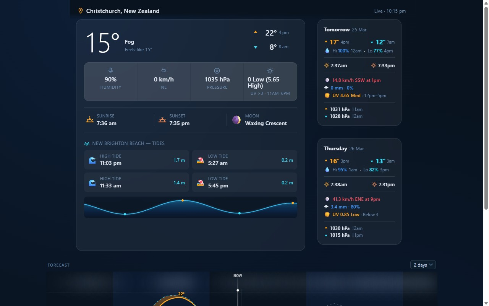
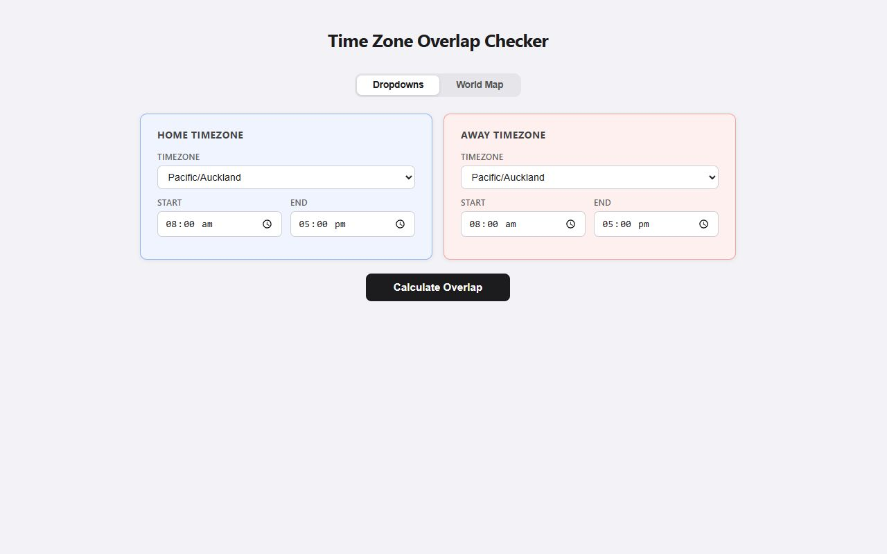
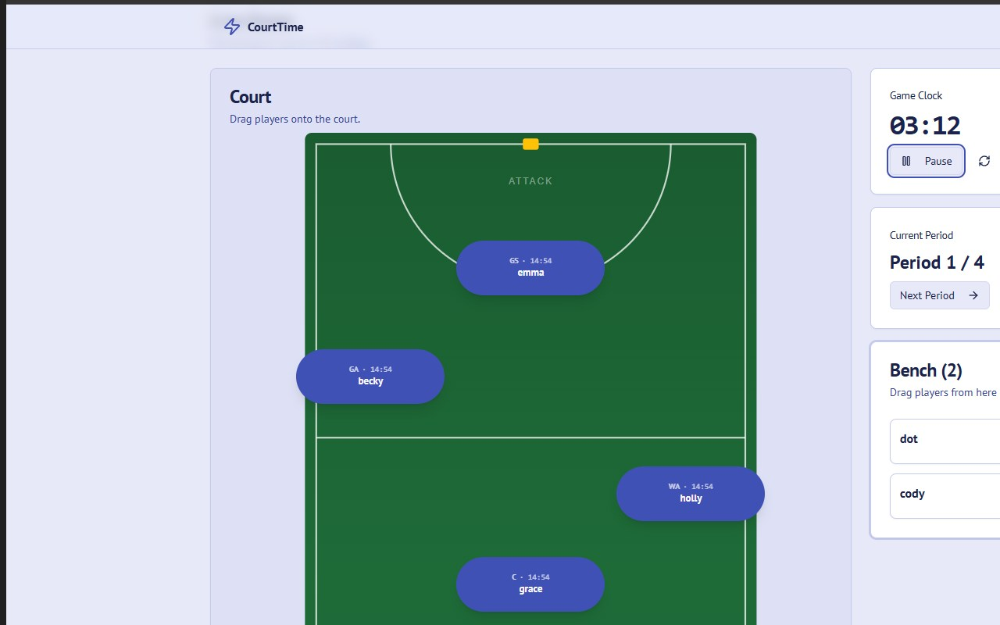
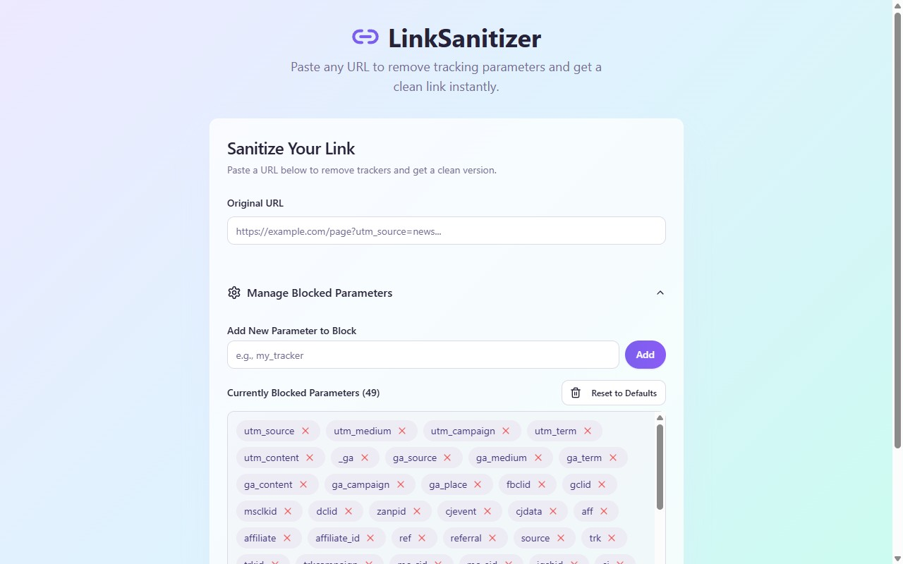
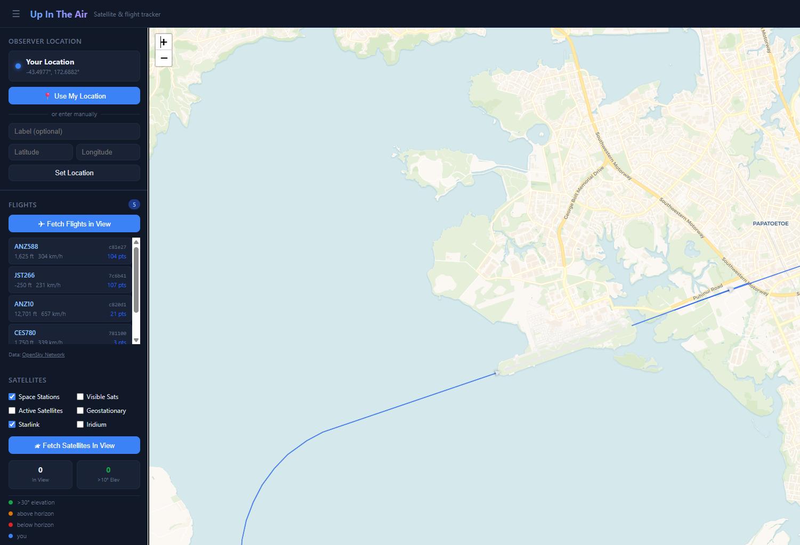
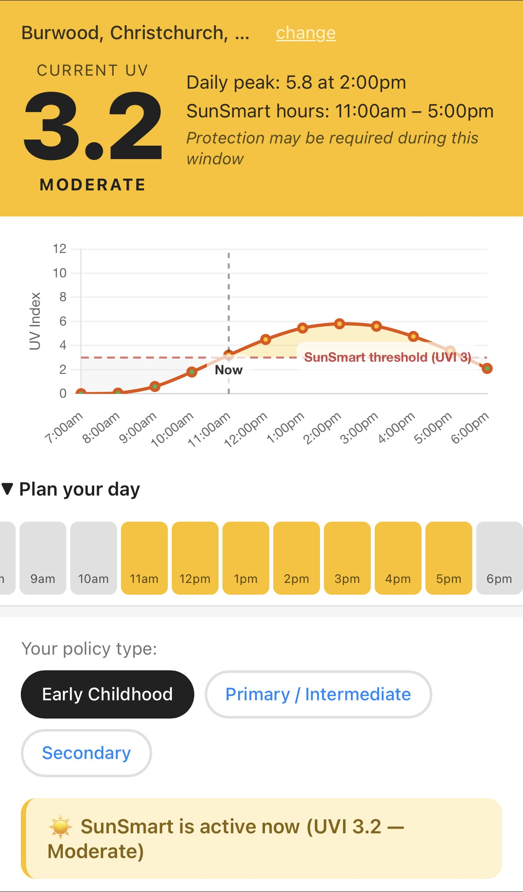

Six Tools, Built and Shipped
Each one was built for a specific job — a coach picking substitutions, a school checking UV, someone working out when two offices are both awake. All six run in a browser.
Projects
Each one is live. Open a card to try it in a new tab.

WeatherTempo
Current conditions, tide times, UV index, moon phase and a multi-day forecast on one screen. Built for checking the day at a glance.
weathertempo.forgesync.co.nz ↗
Time Zone Overlap
Pick two time zones and see where the working hours overlap. Saves doing the arithmetic before booking a call.
timezone.forgesync.co.nz ↗
CourtTime
Netball court-time tracker for coaches. Set the roster, plan substitutions by quarter, and see who is short of court time.
netball.forgesync.co.nz ↗
LinkSanitizer
Paste a link, get it back with the tracking parameters stripped. Turns a URL full of utm_ noise into something worth sharing.
unlink.forgesync.co.nz ↗
Up in the Air
Real-time tracker for aircraft and satellites overhead. Shows what is above your location right now, from airliners to spacecraft.
isthatabird.forgesync.co.nz ↗
SunSmart UV
UV monitoring for schools running a SunSmart policy. Tracks UV through the day and shows the action the policy requires.
sun.forgesync.co.nz ↗